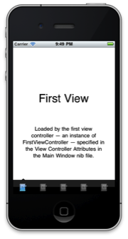

This is a class that subclasses UITabBarController to look more like the one in the official Twitter app, originally called Tweetie. It is a drop-in class, so you can design your tab bar in the interface builder and simply change the type of the tab bar controller from UITabBarController to TweetieTabBarController in the Identity inspector. The graphical changes won't be displayed in the interface builder, but will be reflected when the application is run.
Delegate methods should still work as the class forwards them when the custom buttons are pressed. No extra work is needed to work with the tab images, they are taken from the actual tab bar, so they are exactly how the original tab bar controller would have drawn them. I don't know how PC this is with Apple yet, I won't know until I submit the application that I'm working on to the App Store. It uses two undocumented methods from UITabBarItem to get the images, UITabBarItem's selectedImage and unselectedImage selectors. Though this isn't exactly doing something potentially dangerous or "bad" so Apple might be okay with it; we'll just have to find out.
Either way, I think this is a cooler solution to the Tweetie style tab bar controller's I found when I googled for this. Fun experience so I thought I'd share!

I only used one icon for this example, it does work with unique ones!